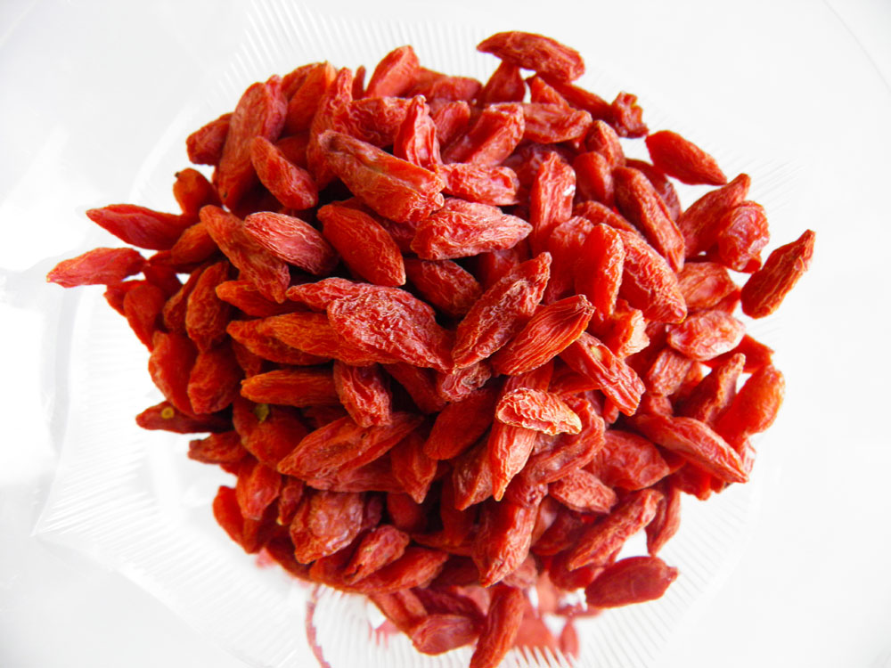

W O L F B E R R Y

Since the early 21st century, interest has increased for wolfberries for their novelty and nutrient value. They have been termed a superfruit, which has led to a profusion of consumer products. In traditional medicine, the whole fruit or its extracts are said to have numerous implied health effects, which remain scientifically unconfirmed as of 2014.
- Pharmacological Name: Lycii fructus
- Average Length: 1-2 centimeters in diameter
- Native: Asia
- Species: Deciduous woody perennial plants
These species produce a bright orange-red, ellipsoid berry 1–2 cm in diameter. The number of seeds in each berry varies widely based on cultivar and fruit size, containing 10–60 tiny yellow seeds that are compressed with a curved embryo. The berries ripen from July to October in the Northern Hemisphere.